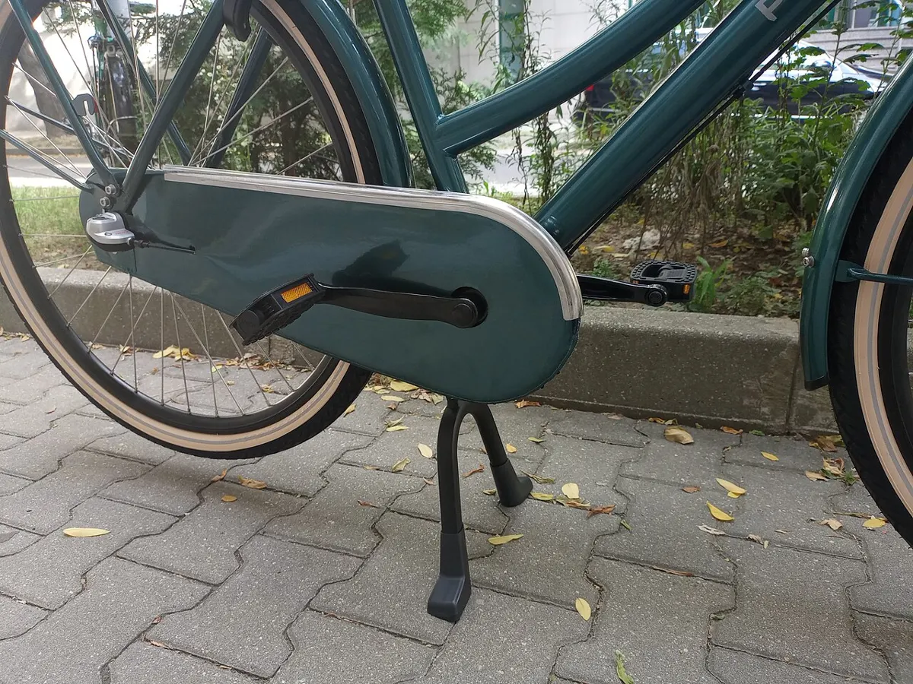
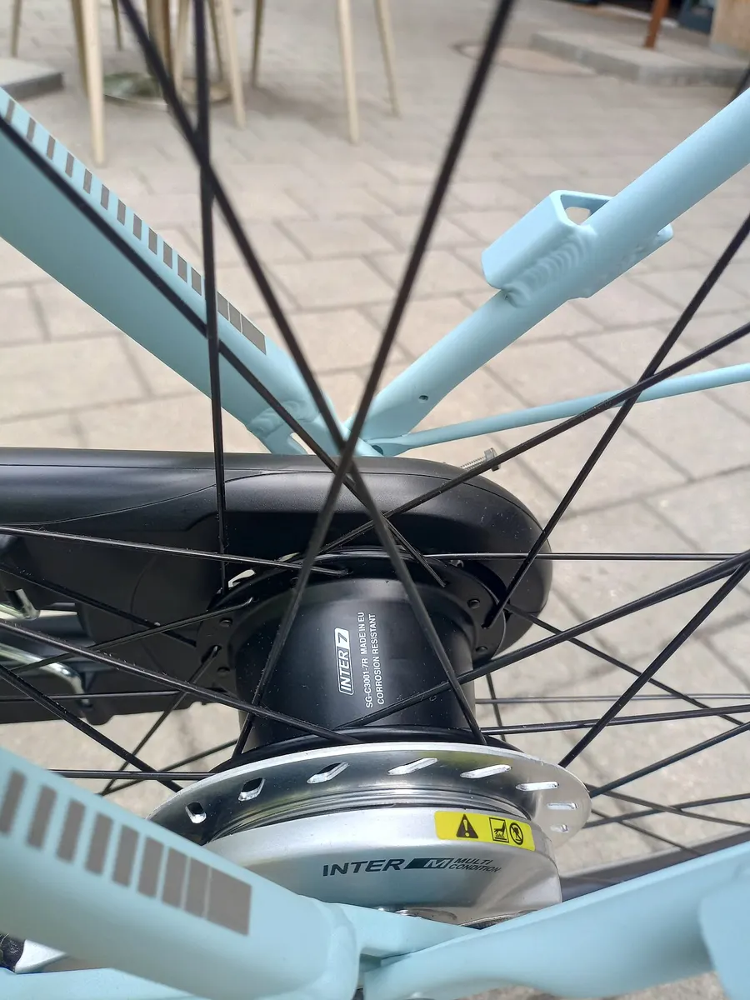
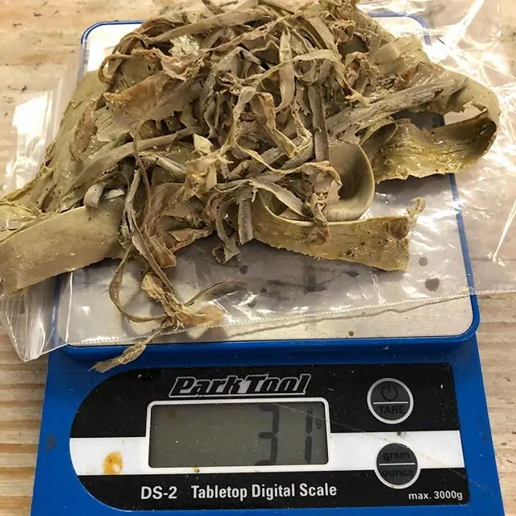

| AistWiki.jpg | Victor Khodeyeyv | CC0 |
 | Shimano Alfine SG-S700.JPG | Keanu4 | CC BY-SA 3.0 |
 | Shimano Alfine SG-S500.JPG | Keanu4 | CC BY-SA 3.0 |
 | Bamboo bike frame Bamboosero.jpg | Noah Scalin | CC BY-SA 2.0 |
 | Freestyle BMX bike 2019-04-05 (1).jpg | Schweiz41 | Public domain |
 | Bosch Performance Line CX, Cycling World Europe 2025, Meerbusch (P1045149).jpg | Matti Blume | CC BY-SA 4.0 |
 | Japanese -keikaisha- BRIDGESTONE MESSAGE Men's Type.jpg | imoni | CC BY-SA 3.0 |
 | Brompton, Velo 24, Berlin (VB243556).jpg | Matti Blume | CC BY-SA 4.0 |
 | Brompton bicycle folded.jpg | Guy Chapman | Public domain |
 | Bakfiets in De Hoge Veluwe — 2024-07-09 16.05.29.jpg | Andrej Shadura | CC0 |
 | Disassembling a bicycle chain with a chain tool.JPG | AndrewDressel | CC BY-SA 3.0 |
 | Popal Daily Dutch bicycle chain case.jpg | Andrej Shadura | CC BY 4.0 |
 | Vélo Hollandais classique.jpg | Brunobuisson | CC BY-SA 4.0 |
 | Bicycle cone wrenches at Somerville Bike Kitchen.jpg | 4300streetcar | CC BY 4.0 |
 | Crank pullers (crank extractors, crank removal tools) for sqare taper bottom brackets.jpg | KaiKemmann | CC BY-SA 4.0 |
 | Bicycle crankset Shimano 105 R7000 (chainring 50-34, length 172.5mm, 11 speed).jpg | Petar Milošević | CC BY-SA 4.0 |
 | DownhillMountainBike 2010 Commencal Supreme DH v2.jpg | Victorvandenberg | CC BY-SA 3.0 |
 | Bike disc break disc pads and caliper.jpg | Alextredz | CC BY-SA 4.0 |
 | Draisine or Laufmaschine, c. 1820 - Kurpfälzisches Museum der Stadt Heidelberg - Heidelberg, Germany - DSC01526.jpg | Daderot | Public domain |
 | Draisine1817.jpg | Wilhelm Siegrist (1797-1843?) | Public domain |
 | Dunlop first pneumatic bicycle tyre.JPG | Geni | CC BY-SA 4.0 |
 | Cowboy 3 pedelec.jpg | Elmschrat | CC BY-SA 4.0 |
 | Electric Bicycle Japan.jpg | HAL-Guandu | CC BY-SA 4.0 |
 | Fatbike in Ukraine 01.jpg | Novoklimov | CC0 |
 | BikeSuspensionFork FoxFloatRLC150 1.jpg | Owen Richard | CC BY-SA 2.0 |
 | UFV Bicycle frame building (8639725699).jpg | University of the Fraser Valley | CC BY 2.0 |
 | Crow, Velo 24, Berlin (VB243505).jpg | Matti Blume | CC BY-SA 4.0 |
 | Mounted derailleur hanger.jpg | Jberkel | CC0 |
 | Bicycle headset (threadless) exploded view-en.png | Keithonearth | CC BY-SA 3.0 |
 | Folding Allen key set, unfolded.jpg | Andrew Plumb | CC BY 3.0 |
 | Electric bicycle with front motor.jpg | AnonymousUnknown author | Public domain |
 | Judy Rock Shox1.jpg | Roberta F. | CC BY-SA 3.0 |
 | Omiya keirin finish 3.jpg | Paulkeller | CC BY-SA 3.0 |
 | Cannondale Lefty Fork.jpg | AndrewDressel (talk) | CC BY-SA 3.0 |
 | Stainless lug.jpg | Suzyj at English Wikipedia | Public domain |
 | Hetchins head tube Coventry Transport Museum.jpg | ...some guy | CC BY 2.0 |
 | Magura Julie disk brake rotor 160 mm.jpg | Petar Milošević | CC BY-SA 4.0 |
 | Velocipede Michaux-4.jpg | tetedelacourse | CC BY-SA 2.0 |
 | 1965 moulton drive side bootiebike.jpg | Conollyb | CC BY-SA 4.0 |
 | Full suspension mountain bike.jpg | Scu98rkr at English Wikipedia | CC BY-SA 3.0 |
 | Nexus hub on Cortina Foss.jpg | Andrej Shadura | CC BY 4.0 |
 | Shimano Nexus 3 bell crank clickbox.jpg | Andrej Shadura | CC BY 4.0 |
 | Shimano Nexus Inter 7 hub gear.jpg | Dawes Kingpin | CC BY-SA 4.0 |
 | Panasonic (P1046232).jpg | Matti Blume | CC BY-SA 4.0 |
 | Park Tools.jpg | Richard Masoner | CC BY-SA 2.0 |
 | Ariel 50 inch High Wheel Bike.jpg | Mike deMille | CC BY 2.0 |
 | SRAM Rival rear derailleur - topview.jpg | Fanny Schertzer | CC BY-SA 3.0 |
 | Residual Sealant.jpg | Glory Cycles | CC BY 2.0 |
 | Rennrad Racing Bicycle noBG.jpg | de:Benutzer:GS | CC BY-SA 4.0 |
 | Rock Shox Reba Race.jpg | Sylenius | CC BY-SA 3.0 |
 | Rohloff Speedhub mit Scheibenbremsaufnahme.jpg | Derstuff | CC BY-SA 4.0 |
 | Rohloff Speedhub-Naben in Produktion.jpg | Derstuff | CC BY-SA 4.0 |
 | Rover safety bicycle of 1885 (left cropped).jpg | Jonathan Cardy | CC BY-SA 3.0 |
 | 1885 Rover bicycle advertisement.jpg | Unknown authorUnknown author | Public domain |
 | Sturmeyarcher.jpg | Suttonpubcrawl at English Wikipedia | CC BY 2.5 |
 | Sturmey Archer AW r.jpg | No machine-readable author provided. Juergen Brauckmann assumed (based on copyright claims). | Public domain |
 | Safety Bicycle ca. 1890.jpg | Kenneth C. Zirkel | CC BY-SA 4.0 |
 | E-bike electric motor shimano ep 8.jpg | Alextredz | CC BY-SA 4.0 |
 | Spoke wrench in use.jpg | Scott Ehardt | Public domain |
 | Tandem bicycle red.jpg | 4RB | CC BY 2.0 |
 | Kogswell Model G--BB detail.JPG | Mishaweis (talk) (Uploads) | CC BY-SA 3.0 |
 | TyreLevers.jpg | Ian Harvey | Public domain |
 | Tubeless tire plug kit from Slime - 02.jpg | Richard Masoner / Cyclelicious | CC BY-SA 2.0 |
 | Road bike tubeless sealant.jpg | Glory Cycles | CC BY 2.0 |
 | Bicycle shed in front of apartments building in Tokyo.jpg | Syced | CC0 |
 | Craftsman click torque wrench.jpg | J.C. Fields (Talk) (Uploads) | CC BY-SA 3.0 |
 | Blue fixed-gear (track) bicycle locked up.JPG | Pfctdayelise | CC BY-SA 2.5 |
 | Bicycle wheel on a truing stand.jpg | Dave Kleinschmidt | CC BY-SA 2.0 |
 | W120 bike.jpg | Віктор Ходєєв /Viktor Khodyeyev | Public domain |
 | Велосипед "Урал" модель 111-621 выпуск 1989 года.jpg | Ev292 | CC0 |
 | Air inlet valve on bike schrader and presta.jpg | Alextredz | CC BY-SA 4.0 |
 | Mostly built wheel on a truing stand.jpg | Seth Vidal | CC BY-SA 2.0 |
 | Worn metallic disc brake pads.jpg | Troy Sankey | CC BY-SA 4.0 |
 | Yamaha electric assist bicycle pas.JPG | Rainmaker47 | CC BY-SA 4.0 |


.jpg){kind=link}
.jpg){kind=link}

.jpg){kind=link}


_for_sqare_taper_bottom_brackets.jpg){kind=link}
.jpg){kind=link}


.jpg){kind=link}
.jpg){kind=link}

_exploded_view-en.png){kind=link}


.jpg){kind=link}


.jpg){kind=link}


_bicycle_locked_up.JPG){kind=link}